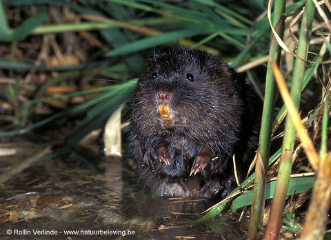

WoelratArvicola terrestris

- Data
- lengte: 140 - 200 mm
staartlengte: 80 - 140 mm
gewicht: 80 -220 g - Biotoop
- Woelratten worden door sommigen 'waterratten' genoemd, maar dit geeft verwarring met de slechts in de verte verwante bruine rat, die ook wel als 'waterrat' wordt aangeduid. Bruine ratten wonen soms ook in holen in oevers en zwemmen eveneens vrij veel, maar blijven het liefste in de buurt van gebouwen en leven vaak bij vervuild water. Woelratten geven de voorkeur aan niet verontreinigd water in betrekkelijk rustige gebieden, bijvoorbeeld langs rivieren of bij plassen en meren. Daarnaast komen woelratten ook op vrij grote afstand van het water in boomgaarden, bollenvelden en dergelijke voor, waar ze de meeste tijd ondergronds blijven.
- Voedsel
- Ze voeden vanuit hun ondergrondse gangencomplex door planten van onderaf naar binnen te trekken.
- Voortplanting
- De paartijd duurt van maart tot oktober. Elke draagtijd is 21 tot 23 dagen lang. Soms wordt er in moerassen aan de voet van zeggen een nest van gevlochten stengels gebouwd, maar meestal ligt het ondergronds in een gangenstelsel. Een wijfje kan in een jaar 4 à 5 worpen grootbrengen van 2 tot 10 jongen.
- Gedrag
- Bij het graven werpen woelratten, net als mollen, aardhopen op, maar anders dan bij deze gravers ligt de gang niet onder, maar naast de hoop. Woelratten die aan de waterkant leven, bewonen vaak maar een smalle oeverstrook, die begrensd wordt door kleine hoopjes uitwerpselen. Een mannetje bezit gemiddeld een reep van circa 125 m en brengt hierop dikwijls zijn gehele leven door. Het territorium van een wijfje is meestal slechts half zo groot en bovendien verhuist zij soms.
- Kenmerken
- In het water lijkt de woelrat op een bruine rat, maar zijn lichaam is duidelijk dat van een woelmuissoort met een stompe kop. Nu en dan komen er volkomen zwarte woelratten voor en soms ook exemplaren met een witte staartpunt. De woelrat is ongeveer even groot als een bruine rat, maar hiervan direct te onderscheiden aan de stompere snuit, de langere, glanzende, donkerbruine vacht waarin de korte, behaarde oren vrijwel verdwijnen, en de kortere staart. Het wijfje is iets kleiner dan het mannetje. Bij het zwemmen steekt de stompe snuit boven water en ontstaat er een V-vormig golfpatroon. Bij het zwemmen gebruiken ze alle vier hun poten.